Recovery System¶
Abstract
Recovery system 的目标是在 transaction failure、system crash、disk failure 等故障发生后，把数据库恢复到满足 atomicity、consistency、durability 的状态。
本讲主线是：先记录足够的恢复信息，再在故障后根据 log / checkpoint / backup 执行 undo、redo 或 restore。
14.1 Failure Classification¶
数据库系统需要处理的 failure 大致分为三类：
- Transaction failure：
- Logical errors：事务因为内部错误而无法完成（overflow, bad input, ...）
- System errors：数据库系统因为某些错误主动终止一个活跃事务（e.g., deadlock）
- System crash：电源故障，或者硬件/软件的故障导致系统崩溃
- Fail-stop assumption：系统整体崩溃，但 nonvolatile storage 未损坏
- Disk failure：磁盘内容被破坏或丢失
- 磁盘数据的破坏被假定为是可检测的：磁盘驱动器使用 checksum（校验和）来检测故障
Recovery Algorithms¶
考虑一个转账 transaction \(T_i\)：从 \(A\) 账户转给 \(B\) 账户 \(\$50\)
- 它需要对 \(A\) 和 \(B\) 做两个更新：从 account \(A\) 中减去 50；向 account \(B\) 中加上 50
- 如果系统在只完成其中一个更新后 crash，就会破坏 consistency
- 如果 transaction 已经 commit 后系统没有把结果保存下来，也会导致 lost update，破坏 durability
因此 recovery algorithm 通常包含两个部分：
- Normal transaction processing 中的动作
- 在正常执行时写 log、force log、checkpoint
- 目的是保证故障后有足够信息可以恢复
- Failure 后的恢复动作
- 根据 log / checkpoint / backup 执行 undo、redo、restore
- 目标是恢复到满足 atomicity、consistency、durability 的状态
14.2 *Storage Structure¶
14.2.1 Storage Types¶
| Storage type | 是否能 survive system crash | Example |
|---|---|---|
| Volatile storage | 不能 | main memory, cache memory |
| Nonvolatile storage | 通常可以，但仍可能损坏 | disk, tape, flash memory, battery-backed RAM |
| Stable storage | 理论上 survives all failures | 用多个 nonvolatile copies 近似实现 |
14.2.2 Stable-Storage Implementation¶
为了接近 stable storage，系统可以在不同磁盘上保存每个 block 的多个副本。这些副本甚至可以放在 remote sites 上，用来防止火灾、洪水等灾难。
但是 data transfer 本身也可能失败。一次 block transfer 可能有三种结果：
- Successful completion：destination block 正确写入
- Partial failure：destination block 被写坏，内容不正确
- Total failure：destination block 根本没有被更新
在传输数据时保护存储媒介的方法：执行 output operation 时遵循如下步骤
- 先把信息写入第一个 physical block
- 第一次写成功后，再把同样的信息写入第二个 physical block
- 只有第二次写也成功后，整个 output 才算完成
如果 failure 导致两个 copies 不一致，恢复时需要：
- 找出 inconsistent blocks
- 昂贵方法：比较每个 disk block 的两个 copies
- 更好的方法：在 nonvolatile RAM 或磁盘特殊区域记录正在进行的 disk writes，恢复时只检查这些可能不一致的 blocks
- 修复 inconsistent copies
- 如果某个 copy checksum 错误，用另一个 copy 覆盖它
- 如果两个 copy checksum 都没错但内容不同，用第一个 copy 覆盖第二个 copy
14.2.3 Data Access¶
数据库中的 block 有两个层次：
- Physical block：位于 disk 上的 block
- Buffer block：临时位于 main memory 中的 block
Disk 和 memory 之间的数据移动通过两个操作完成：
input(B)：把 disk 上的 physical block \(B\) 读入 main memoryoutput(B)：把 main memory 中的 buffer block \(B\) 写回 disk，替换对应的 physical block
每个 transaction \(T_i\) 有自己的 private work-area，用来保存它访问和更新的数据项的 local copies。如果 \(T_i\) 访问数据项 \(X\)，它的 local copy 记作：\(x_i\)
Transaction 和 buffer block 之间的数据传递通过：
read(X)：将 data item \(X\) 的值赋给 local variable \(x_i\)write(X)：将 local variable \(x_i\) 的值写回 buffer block 中的 data item \(X\)- 注意：
write(X)只把值写到 buffer block；output(B_X)不一定紧跟在write(X)后面；系统可以在合适的时候再把 block \(B_X\) 写回 disk。
Example of Data Access
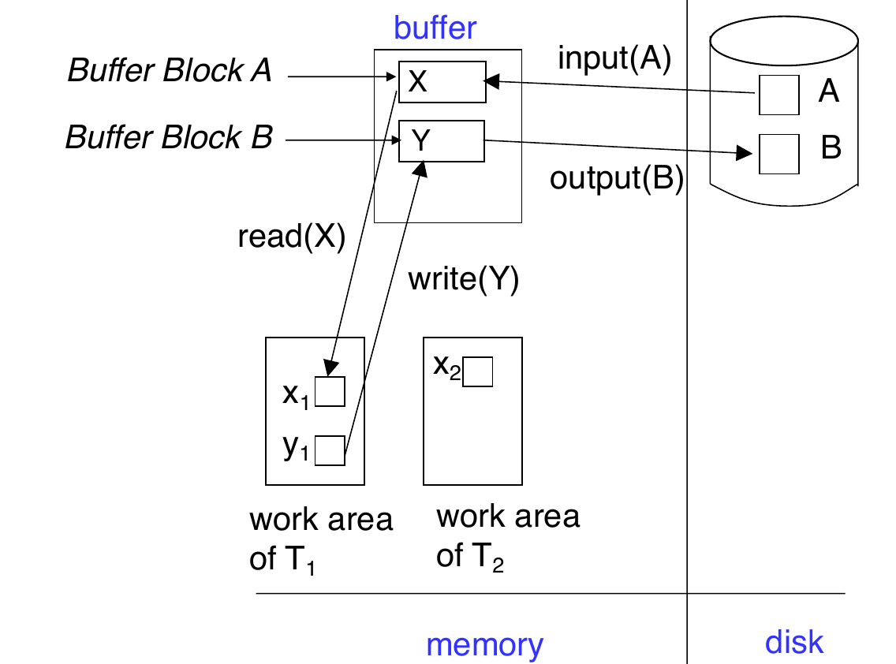
图中的含义：
- disk 上有 physical blocks，例如 block \(A\)、block \(B\)
input(A)把 disk block 读入 buffer- transaction 在 private work-area 中操作 local copy
write(Y)只更新 buffer block 中的 \(Y\)output(B)才把 buffer block 写回 disk
14.3 *Recovery and Atomicity¶
- 为了在 failure 后保证 atomicity，系统不能直接修改数据库而不留下任何恢复信息。在真正修改 database 之前，需要先把描述修改的信息写到 stable storage。
- 本讲重点研究 log-based recovery mechanisms（日志恢复机制）
- 另一种较少使用的替代方案是 shadow paging（适合一些串行的事务）
14.4 Log-Based Recovery¶
Log 保存在 stable storage 上，日志是一组 log records 的序列，用来记录数据库上的 update activities。
| Log record | Meaning |
|---|---|
<Ti start> |
transaction \(T_i\) 开始 |
<Ti, X, V1, V2> |
\(T_i\) 将 \(X\) 从 old value \(V_1\) 改为 new value \(V_2\)（在 \(T_i\) 执行 write(X) 之前写入） |
<Ti commit> |
transaction \(T_i\) 成功完成 |
<Ti abort> |
transaction \(T_i\) 被回滚 |
两类使用 log 的恢复方法：
- Deferred database modification：
write(X)时只写 log，延迟到 transaction commit 之后才写入 database - Immediate database modification：
write(X)时可以立即写 buffer / disk，可以在 commit 之前就写入 database
14.4.1 Deferred Database Modification¶
核心思想：
- 先把所有修改记录到 log 中，database write 延迟到事务 partial commit 之后
假设 transactions 串行执行，执行流程如下：
1. Transaction \(T_i\) 开始时把<Ti start>写入 log
2. 执行write(X)时，写入 log record<Ti, X, V>，这里 \(V\) 是 \(X\) 的 new value
3.write(X)暂时不真正写 \(X\)
4. 当 \(T_i\) partially commits，写：<Ti commit>
5. 最后读取 log records，执行之前 deferred writes
Info
Deferred scheme 中不需要 old value，因为未提交 transaction 不会真正修改 database，所以 crash 后不需要 undo 它。
Recovery Rule¶
Crash 后只需要 redo 已经 commit 的 transaction
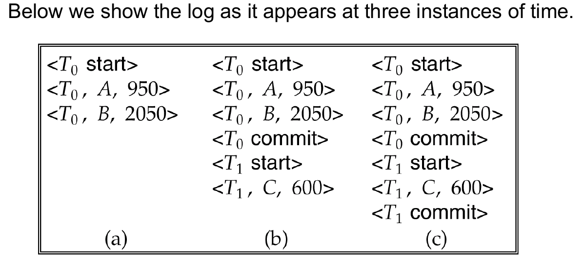
图中三个时刻的含义：
- case (a)：没有 transaction commit，故障后不需要 redo
- case (b)：
T0已经 commit，需要redo(T0) - case (c)：
T0和T1都已经 commit，需要依次 redo
Abstract
Deferred modification 的恢复简单，因为未提交事务没有写过 database；缺点是 commit 前修改不能真正落盘。
14.4.2 Immediate Database Modification¶
允许 uncommitted transaction 的更新在 commit 前写入 buffer，甚至写到 disk。
因此它必须保存 old value 和 new value，才能支持：
- undo 未提交事务的影响
- redo 已提交事务的影响
核心规则：
- Update log record 必须在 database item 被写入之前写入
- 我们假设 log record 会被直接输出到 stable storage
- Updated blocks output 到 stable storage 可以在事务提交之前或之后任何时间进行
- Block 的 output 顺序可以与它们被写入的顺序不同
这正是 write-ahead logging, WAL 的基础。
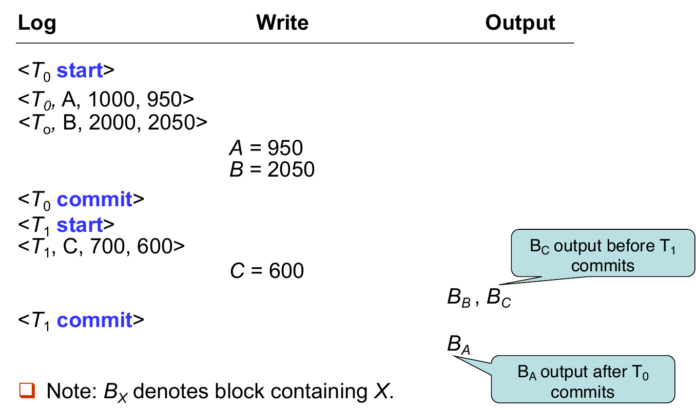
图中 \(B_X\) 表示包含 data item \(X\) 的 block：
- \(B_C\) 可以在 \(T_1\) commit 前输出到 disk
- \(B_A\) 可以在 \(T_0\) commit 后才输出到 disk
- 因此 recovery 不能简单假设 commit 前一定没写盘、commit 后一定已写盘
Recovery Rule¶
Undo and Redo
Immediate modification 的 recovery procedure 有两个基本操作。
| Operation | Meaning | Scan direction |
|---|---|---|
undo(Ti) |
将 \(T_i\) 更新过的数据项恢复为 old values | 从 \(T_i\) 的最后一条 log record 向前 |
redo(Ti) |
将 \(T_i\) 更新过的数据项设置为 new values | 从 \(T_i\) 的第一条 log record 向后 |
这两个操作必须是idempotent（幂等） 的：即使重复执行多次，效果也和执行一次相同。
原因是 recovery 本身也可能中途 crash，重启后同一个 undo / redo 可能再次执行。
- Crash 后：
- 如果 log 中有
<Ti start>，但没有<Ti commit>，则需要undo(Ti)。 - 如果 log 中同时有
<Ti start>和<Ti commit>，则需要redo(Ti)。
- 如果 log 中有
- 执行顺序：
- 先执行所有 undo 操作
- 再执行所有 redo 操作
Immediate DB Modification Recovery Example
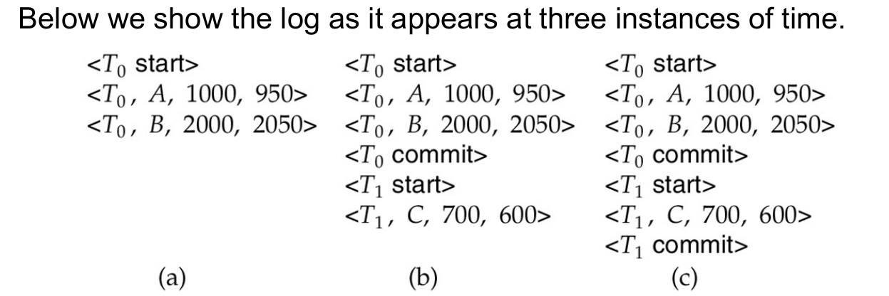
图中三个 recovery cases：
- case (a)：\(T_0\) 未 commit，需要
undo(T0) - case (b)：\(T_0\) 已 commit，\(T_1\) 未 commit，需要
redo(T0)和undo(T1) - case (c)：\(T_0\) 和 \(T_1\) 都已 commit，需要
redo(T0)和redo(T1)
14.4.3 Checkpoints¶
如果恢复时从 log 开头开始 undo / redo，会非常慢：
- 系统运行时间越久，log 越长
- 很多已经完成并写盘的 transaction 被不必要地 redo
因此系统周期性执行 checkpointing，Checkpoint 的步骤如下：
- 将 main memory 中当前所有 log records 输出到 stable storage。
- 将所有 modified buffer blocks 输出到 disk。
- 向 stable storage 写入 checkpoint record：
<checkpoint L>，其中 \(L\) 是 checkpoint 时仍 active 的 transaction 列表- 假设 checkpoint 时所有 updates 都暂停
Recovery with Checkpoints¶
恢复时不需要考虑整个 log，只需要考虑 checkpoint 前最新发生的 transaction 以及这个事务之后发生的 transactions。
- 从 log 末尾向前扫描，找到最近的
<checkpoint L> - 只考虑 \(L\) 中的 transactions，以及 checkpoint 之后开始的 transactions
- checkpoint 之前已经 commit 或 abort 的 transactions 可以忽略，
- 因为它们的 updates 已经输出到 stable storage（checkpoint 写入时会写盘）
- 对 \(L\) 中的每个 transaction，可能还需要继续向前扫描，直到找到对应的
<Ti start>- 早于这些
<Ti start>的 log 部分不再需要用于 recovery，可以在适当时候删除。
- 早于这些
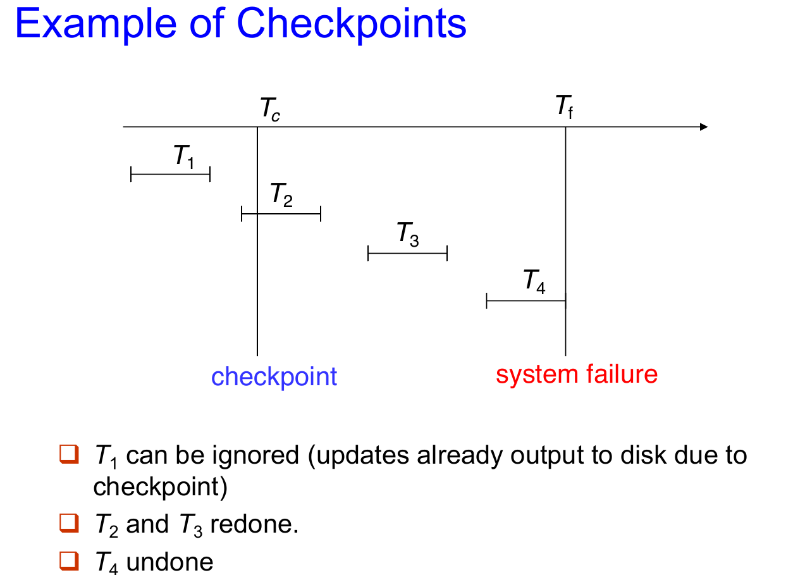
14.5 *Shadow Paging¶
Shadow paging 是 log-based recovery 的替代方案，它适用于 transactions 串行执行的情形。它的核心思想是在一个 transaction 执行期间维护两张 page tables：current page table 和 shadow page table。
- Shadow page table：
transaction 开始前的数据库状态，保存在 nonvolatile storage 中，执行期间不修改。 - Current page table：
transaction 执行过程中实际使用的 page table，用于修改数据。
一开始，两张 page tables 完全相同，在执行过程中：
- 访问数据时只使用 current page table
- 当某个 page 第一次被写入时：
- 先把该 page 复制到一个 unused page
- current page table 指向这个 copy，更新在 copy 上进行
- shadow page table 仍然指向旧 page，因此保留 transaction 执行前的状态
Example of Shadow Paging
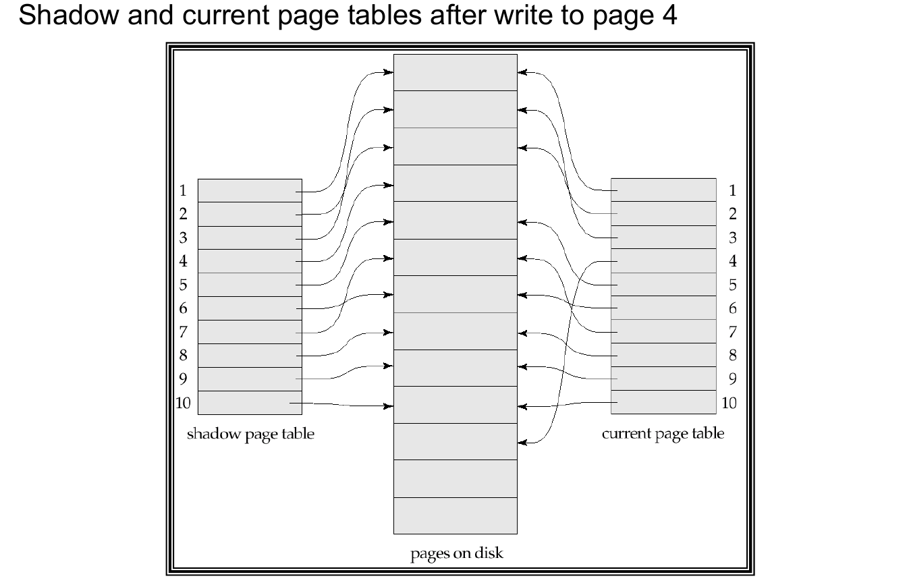
图中写 page 4 后：
- shadow page table 仍然指向原来的 page 4。
- current page table 指向 page 4 的新副本。
- 如果 transaction abort 或 crash，只要继续使用 shadow page table，就能回到旧状态。
Commit Procedure¶
- Commit 一个 transaction 的过程：
- 将 main memory 中所有 modified pages flush 到 disk
- 将 current page table 输出到 disk
- 把 fixed disk location 中的 shadow page table pointer 改为指向 current page table
- 一旦 pointer 更新完成，transaction 就 commit
- Crash 后不需要复杂恢复：
- 如果 pointer 还没切换，使用旧 shadow page table
- 如果 pointer 已经切换，使用新 shadow page table
- 未被 current / shadow page table 指向的 pages 应该被 garbage collected
Advantages and Disadvantages¶
优点：
- 不需要写 log records。
- recovery 很简单。
缺点： - 复制整个 page table 很昂贵。
- 可以用类似 B+ tree 的 page table 结构，只复制通向更新 leaf nodes 的路径。
- 即使优化后，commit overhead 仍然高。
- 需要 flush every updated page 和 page table。
- 容易导致 data fragmentation。
- 相关 pages 可能被分散到磁盘不同位置。
- 每个 transaction 完成后，需要 garbage collect old versions。
- 很难扩展到 concurrent transactions。
- log-based schemes 更容易支持并发。
14.6 Recovery With Concurrent Transactions¶
为了支持多个 transactions 并发执行，需要修改前面的 log-based recovery
基本假设：
- 所有 transactions 共享同一个 disk buffer 以及 log file
- 一个 buffer block 可以包含多个 transactions 更新过的数据项
- 并发控制使用 strict 2PL
- 即
X-locks一直持有到 transaction 结束 - uncommitted transaction 的 updates 不应被其他 transactions 看到
- 即
- Log 写法和之前一样，但不同 transactions 的 log records 会穿插在同一个 log file 中
- 并发场景下，checkpoint record 的形式是：
<checkpoint L>- 其中 \(L\) 是 checkpoint 时仍 active 的 transactions 列表
- 假设 checkpoint 进行时没有 updates 正在执行
Recovery Algorithm¶
- 当系统从 crash 中恢复时，首先要做的部分如下：
- 初始化列表 undo-list 和 redo-list 为空
- 从 log 末尾从后向前扫描，直到遇到第一个
<checkpoint L>时停止
在此之前的扫描过程中：- 遇到
<Ti commit>，将 \(T_i\) 加入redo-list - 遇到
<Ti start>，且 \(T_i\) 不在redo-list中，将 \(T_i\) 加入undo-list - 遇到
<Ti abort>，将 \(T_i\) 加入undo-list
- 遇到
- 对 checkpoint list \(L\) 中的每个 \(T_i\)：如果 \(T_i\) 不在
redo-list中，将它加入undo-list- 此时 undo-list 中是未充分完成的事务，redo-list 中是完成了的事务
- 具体的恢复操作如下（先执行 undo，后执行 redo）：
- 从 log 末尾从后向前扫描，直到 undo-list 中每个 \(T_i\) 的
<Ti start>都被找到后停止- 在 scan 的过程中，对 undo-list 中事务相关的 log record 执行 undo
- 找到最近的
<checkpoint L> - 从该 checkpoint 从前向后扫描到 log 末尾
- 在 scan 的过程中，对 redo-list 中每个事务相关的 log record 执行 redo
- 从 log 末尾从后向前扫描，直到 undo-list 中每个 \(T_i\) 的
Example
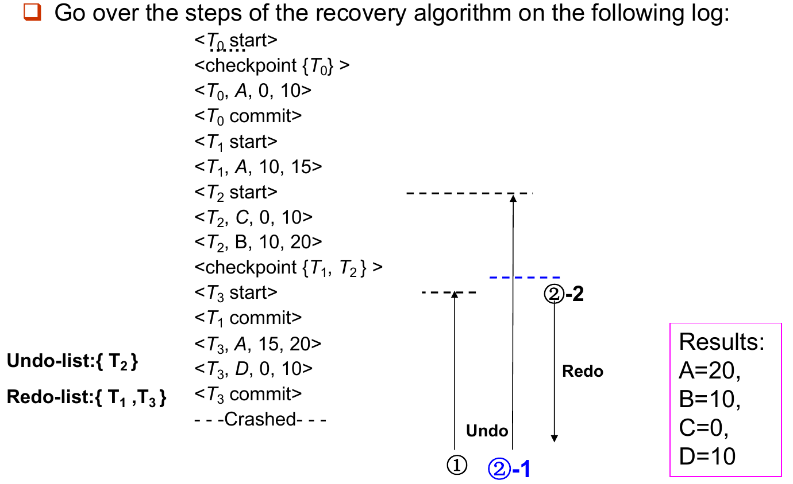
Warning
并发恢复时，不能只看某个 transaction 是否出现在 checkpoint 之前或之后；还要看它是否在 checkpoint 时 active，以及 crash 前是否 commit。
14.7 Buffer Management¶
14.7.1 Log Record Buffering¶
- 通常 stable storage 的输出单位是 block，而 log record 的大小远小于 block。因此系统会把 log records 先缓存在 main memory 中，而不是每条 log record 都立刻写到 stable storage。
- Log records 会在以下情况写出：
- log buffer 中的 block 满了
- 执行 log force operation（例如 checkpoint 发生）
- Log records 会在以下情况写出：
- Log force（强制日志） 是指强制把某个 transaction 的所有 log records，包括
<Ti commit>，写到 stable storage，这样多个 log records 可以通过一次 output 写出，降低 I/O cost
14.7.2 Rules for Log Record Buffering¶
如果 log records 被缓存（buffered）在 main memory 中，必须遵守以下四个规则：
- Log records 必须按照创建顺序输出到 stable storage。
- 只有当
<Ti commit>已经输出到 stable storage 后，\(T_i\) 才能进入 commit state。 - 在
<Ti commit>输出之前，\(T_i\) 的所有 log records 必须已经输出到 stable storage。 - 在 main memory 中的 data block 输出到 database 之前，所有与该 block 中数据相关的 log records 必须已经输出到 stable storage
- 这条规则也称为 write-ahead logging rule, WAL（先写日志规则）
14.7.3 Database Buffering¶
DBMS 会维护一个 in-memory buffer of data blocks
- 当 buffer 满了，新 block 需要进入 buffer 时，系统必须选择某个已有 block 移出
- 如果被移出的 block 已经被修改，就必须 output to disk
Recovery algorithm 支持两种重要策略：
- No-force policy：transaction commit 时不要求 updated blocks 立刻写 disk
- commit 快，但 crash 后 committed 的修改可能需要 redo
- Force policy 要求 updated blocks 在 commit 时写盘，commit cost 高
- Steal policy：包含 uncommitted updates 的 blocks 可以在 commit 前写 disk
- buffer 使用灵活，但 crash 后 uncommitted updates 可能需要 undo
14.7.4 Latches and Output Procedure¶
- 如果包含 uncommitted updates 的 block 被输出到 disk，必须先把对应 undo information 写入 stable log（也就是遵守 WAL）。
- 此外，block 输出时不能有 update 正在进行，系统通过 latches 保证这一点
- transaction 修改某个 block 前，先获得该 block 的 exclusive latch
- 写完后立刻释放 latch，latch 持有时间很短，不等同于 transaction-level lock
- 输出一个 block 到 disk 的流程：
- acquire exclusive latch on the block
- Perform a log flush
- Output the block to disk
- Release the latch
Warning
Lock 主要用于 isolation，持续时间可能到 transaction 结束；latch 主要保护内存数据结构或 block 写出过程，持续时间很短。
14.7.5 Real Memory vs Virtual Memory¶
Database buffer 可以放在：
- DBMS 预留的一块 real main memory 中
- virtual memory 中
预留 real memory 的问题：
- 需要提前在 database buffer 和 applications 之间划分内存，灵活性差。
- 系统运行期间需求变化时，OS 虽然最清楚内存该如何分配，却无法动态改变这块划分。
因此很多数据库 buffer 会使用 virtual memory，但这会带来 dual paging problem。
Dual Paging Problem
如果 OS 要 evict 一个被修改过的 buffer page：
- OS 可能先把它写到 swap space。
- 之后 DBMS 又决定把该 buffer page 写到 database disk
- 如果 page 已经在 swap space 中，DBMS 可能需要先从 swap space 读回，再写到 database disk。
这就产生了额外 I/O。
理想情况是 OS 想 evict buffer page 时，把控制权交给 DBMS：
- 如果 page modified，DBMS 先确保 log 写出，再把 page 输出到 database
- 然后释放该 page 给 OS 使用
14.8 Failure with Loss of Nonvolatile Storage¶
到目前为止，前面的恢复讨论大多假设 nonvolatile storage 没有丢失。如果发生 disk failure，就需要更强的机制：database dump。
Dump Procedure¶
- 系统周期性地把整个 database 内容 dump 到 stable storage
- 简单 dump 要求 dump 时没有 active transaction，过程类似 checkpoint：
- 将 main memory 中所有 log records 输出到 stable storage
- 将所有 buffer blocks 输出到 disk
- 将 database 内容复制到 stable storage
- 在 stable log 中写入：
<dump>
Recovery from Disk Failure¶
Disk failure 后：
- 从最近的 dump 恢复 database
- 查阅 log 并 redo 所有在 dump 之后 commit 的 transactions
也可以扩展为允许 dump 时仍有 active transactions，这称为：
- fuzzy dump
- online dump
商业 DBMS 通常还会结合 replication、backup tools、security and reliability methods 来完成恢复。
14.9 *Advanced Recovery Techniques¶
前面的恢复算法主要适合一般 data item 更新，但高并发结构，例如 B+ tree，并不总能用简单的 physical undo
14.9.1 Logical Undo¶
B+ tree insertion / deletion 可能会提前释放 locks
- 如果某个操作释放 lock 后，其他 transactions 又修改了 B+ tree，那么恢复时不能简单把 old value 写回去。
- old physical value 可能已经不再适合当前 B+ tree 状态
- 强行 physical undo 可能破坏后来 transactions 的正确更新
- 因此 insertion 的 undo 应该执行 deletion，deletion 的 undo 应该执行 insertion，这种方法被称为 logical undo。
- 对应地，undo log record 应该包含要执行的 undo operation，这叫 logical undo logging。与之相对的是 physical undo logging，即记录 old value；但 redo 仍然通常使用 physical redo。
Warning
Logical redo 很复杂，因为 crash 后 disk 上的 database state 可能不是 operation-consistent 的。
14.9.2 Operation Logging¶
对于“operation 没完成”和“operation 已完成但 transaction 要 rollback”两种情况，需要分别用不同的 undo 策略。
对一个 operation instance \(O_j\)，logging 的三个时间段：
- 开始时：写
<Ti, Oj, operation-begin>，其中 \(O_j\) 是该 operation instance 的唯一 identifier - 执行中：正常记录 physical redo 和 physical undo information（和之前一样）
- 完成时：写
<Ti, Oj, operation-end, U>，其中 \(U\) 包含 logical undo 所需的信息
Crash / rollback 发生时，关键在于找到 operation-begin 和 operation-end 之间的配对关系：
- 如果没有找到
operation-endrecord，说明 operation 没完成，使用 physical undo information - 如果找到了
operation-endrecord，说明 operation 已完成，使用 \(U\) 执行 logical undo - Crash 后 redo 仍然使用 physical redo information
14.9.3 Rollback with Operation Logging¶
Rollback 过程本身也可能 crash，如何避免重复 undo？
Rollback transaction \(T_i\) 时，从 log 从后向前扫描
- 如果找到普通 update log record：
<Ti, X, V1, V2>- 执行 undo，并写一个特殊的 redo-only log record：
<Ti, X, V1>
- 执行 undo，并写一个特殊的 redo-only log record：
- 如果找到：
<Ti, Oj, operation-end, U>- 使用 \(U\) 执行 logical rollback
- Rollback 过程中产生的 updates 也要像普通 operation 一样记录 log
- operation rollback 结束时，不写 operation-end，而是写：
<Ti, Oj, operation-abort>，然后跳过 \(T_i\) 之前属于同一个 operation 的所有 log records，直到找到：<Ti, Oj, operation-begin>
- 如果遇到 redo-only record，忽略它
- 如果遇到：
<Ti, Oj, operation-abort>，同样跳过前面属于该 operation 的所有 log records，直到 operation-begin - 遇到
<Ti start>时停止扫描，并写：<Ti abort>
Tip
跳过已经 rollback 过的 operation log records 很重要，否则 crash 后重新恢复时可能对同一 operation 重复 rollback。
14.9.4 System Crash Recovery with Advanced Logging¶
为什么先 redo 再 undo？
- Crash 时磁盘上的状态：
- 某些 committed transactions 的 updates 可能没写盘（需要 redo）
- 某些 uncommitted transactions 的 updates 可能已经写盘（需要 undo）
- 不同磁盘上的状态是不一致的，而 Logical Undo 需要一致的数据库状态
System crash 后的恢复可以概括为两阶段：
- 从最近的
<checkpoint L>向前扫描- 通过 physically redo 所有事务的所有更新来恢复历史
- 建立
undo-list- 初始时
undo-list = L - 遇到
<Ti start>，把 \(T_i\) 加入undo-list - 遇到
<Ti commit>或<Ti abort>，把 \(T_i\) 从undo-list中删除
- 初始时
- 从 log 末尾向后扫描
- 对
undo-list中 transactions 的 log records 执行 undo - 当遇到某个 \(T_i\) 的
<Ti start>时，写<Ti abort> - 当所有
undo-list中 transactions 的 start records 都找到后，停止 - 这样会先把 database 恢复到 crash moment 的状态，然后撤销 incomplete transactions
- 对
14.9.5 Fuzzy Checkpointing¶
普通 checkpoint 的问题是 checkpoint 期间 transaction 不能继续执行
- Fuzzy checkpointing 允许 transactions 在 checkpoint 的耗时部分继续执行：
- 临时停止所有 transaction updates
- 写入
<checkpoint L>log record，并 force log 到 stable storage - 记录 modified buffer blocks 列表 \(M\)
- 允许 transactions 继续执行
- 将 \(M\) 中的 modified buffer blocks 输出到 disk
- 输出 block 时不能继续更新该 block
- 必须遵守 WAL
- 在 disk 上固定位置
last_checkpoint存储 checkpoint record 的指针
- 恢复时从
last_checkpoint指向的 checkpoint record 开始扫描last_checkpoint之前的 log records，其 updates 已经反映到 disk 上，不需要 redo- 如果系统在 checkpoint 过程中 crash，incomplete checkpoints 也能被安全处理
14.10 *ARIES Recovery Algorithm¶
ARIES（Algorithm for Recovery and Isolation Exploiting Semantics）是 IBM 研发的恢复算法，被几乎所有现代数据库采用（DB2、SQL Server、PostgreSQL等）。
- 目标是降低 normal processing 的开销、加快 recovery 速度，支持更复杂的并发和恢复场景。
- 前面学习的恢复算法可以看作 ARIES 的简化版本。
ARIES 的几个核心优化：
- 使用 log sequence number, LSN 标识 log records
- 在 page 中存储 PageLSN（最后一个反应在该 page 上的 log record 的 LSN）
- 可以用来判断某个 update 是否已经反映到 page 上
- 使用 physiological redo
- 使用 dirty page table，避免不必要的 redo
- 使用 fuzzy checkpointing
- checkpoint 只记录 dirty pages 信息，不要求 checkpoint 时把 dirty pages 写出
14.10.1 Physiological Redo¶
假设要删除 page 里的一条 record：
- pure physical redo：记录 page 中大量 old/new values，精确但冗长
- physiological redo：只记录“删除某条 record”这个动作，简洁但不安全
- physiological redo：物理地标识 affected page，在 page 内部用逻辑动作描述修改
前提：
- page output to disk 必须是 atomic 的
- 如果 page output 不完整，需要 checksum 检测，并进行额外恢复
- 不完整 page output 通常被当作 media failure
14.10.2 ARIES Data Structures¶
ARIES 使用几个核心数据结构：
- LSN(log sequence number) 用来识别每条 log record
- Sequentially increasing
- 通常是 log file 起始位置的 offset，便于快速访问以及扩展到多个 log files
- PageLSN：最后一个已经反映在该 page 上的 log record 的 LSN
- 更新 page 时：
- X-latch page，写 log record
- 更新 page
- 将 log record 的 LSN 写入 PageLSN
- Unlatch page
- Flush page to disk 时：需要先 S-latch page，这样 disk 上的 page state 是 operation-consistent，这是 physiological redo 的前提。
- PageLSN 在 recovery 中用于避免重复 redo，从而保证 idempotence（幂等）。
- 更新 page 时：
- Log Record
- 每条 log record 记录同一个 transaction 的前一条 log record 的 LSN：PrevLSN
|-- LSN --|-- TransID --|-- PrevLSN --|-- RedoInfo --|-- UndoInfo --|
- ARIES 还使用一种特殊的 redo-only log record，称为 CLR, Compensation Log Record
- CLR 用来记录 recovery 或 rollback 中已经执行的 undo actions
- CLR 中有一个字段：
UndoNextLSN，它表示下一条还需要 undo 的更早 log record- 避免重复 undo 已经 undo 过的 actions
- Recovery 再次 crash 后，可以从 CLR 中知道应该跳到哪里继续 undo
- 每条 log record 记录同一个 transaction 的前一条 log record 的 LSN：PrevLSN
- Dirty Page Table
- 记录 buffer 中已经被更新但可能还没写回 disk 的 pages
- 对每个 dirty page，记录：
- PageLSN：该 page 最新被修改时的 LSN
- RecLSN：该 page 第一次变 dirty 时的 LSN
- RecLSN 会被记录在 checkpoint 中，帮助减少 redo work
- Checkpoint Log Record
- 包含：
- DirtyPageTable 以及 Active transaction list
- 每个 active transaction 的 LastLSN
- Disk 上固定位置记录最后一个 completed checkpoint log record 的 LSN
- ARIES checkpoint 时不要求 dirty pages 写出，而是让 dirty pages 在后台持续 flush。因此 checkpoint overhead 很低，可以频繁执行
- 包含：
ARIES Data Structures
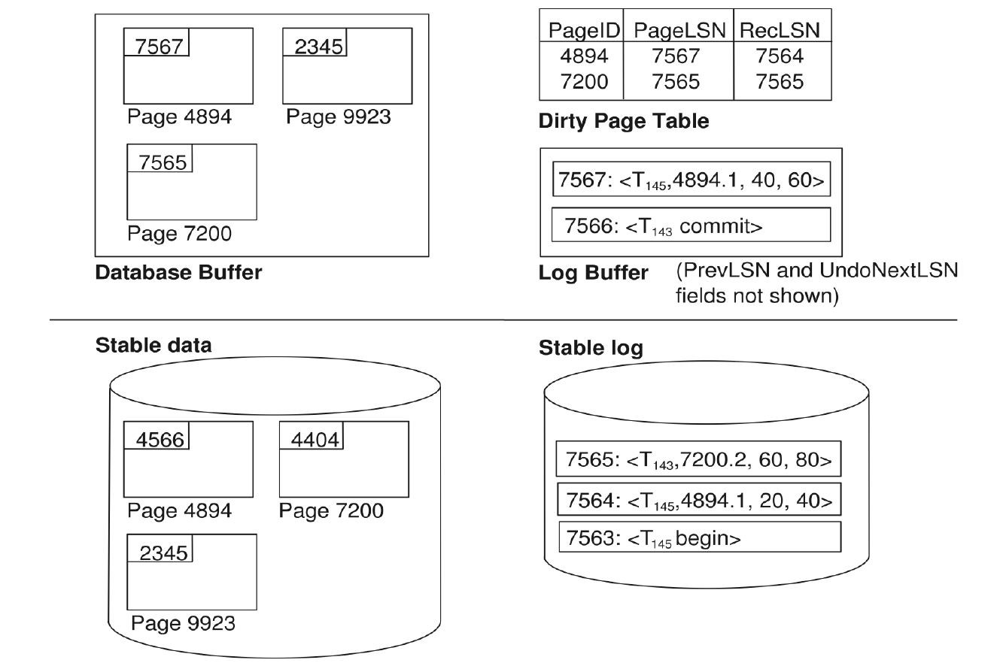
图中体现了几个关系：
- database buffer 中每个 dirty page 有 PageLSN。
- stable data 中 page 的 PageLSN 可能更旧。
- dirty page table 记录 PageID、PageLSN、RecLSN。
- stable log 中保存已经写出的 log records。
- log buffer 中可能还有尚未写出的 log records。
14.10.3 ARIES Recovery¶
3 Passes
ARIES recovery 包含三趟扫描：
- Analysis pass
- Redo pass
- Undo pass
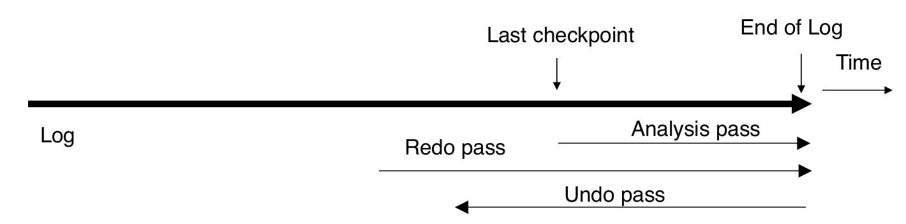
三趟扫描的方向：
- Analysis 从 last checkpoint 开始向前到 end of log
- Redo 从 RedoLSN 开始向前到 end of log
- Undo 从 end of log 向后，直到所有 incomplete transactions 被撤销
Analysis Pass¶
目标
- 判断哪些 transactions 需要 undo
- 判断 crash 时哪些 pages 是 dirty 的
- 计算 redo 应从哪个 LSN 开始，即 RedoLSN
具体操作从最后一个 complete checkpoint log record 开始：
- 从 checkpoint log record 中读入 DirtyPageTable
- 设置：\(\text{RedoLSN}=\min(\text{RecLSN of all dirty pages})\)
如果没有 dirty pages，则：\(\text{RedoLSN}=\text{checkpoint record's LSN}\) - 设置
undo-list为 checkpoint log record 中的 active transactions - 记录每个 active transaction 的 LastLSN
- 从 checkpoint 向前扫描到 end of log：
- 如果发现某 transaction 的 log record 但它不在
undo-list，加入undo-list - 如果发现 update log record，且对应 page 不在 DirtyPageTable 中，则加入该 page，并把
RecLSN设为该 update log record 的 LSN - 如果发现 transaction end log record，将该 transaction 从
undo-list中删除 - 持续维护每个 transaction 的 last log record
- 如果发现某 transaction 的 log record 但它不在
Analysis pass 结束后：
RedoLSN决定 redo pass 从哪里开始- DirtyPageTable 中每个 page 的
RecLSN用于减少 redo work undo-list中的 transactions 都需要 rollback
Redo Pass¶
Redo pass 的目标是 repeat history：
从 RedoLSN 开始向前扫描，遇到 update log record 时
- 如果该 page 不在 DirtyPageTable 中，或者 log record 的 LSN 小于该 page 的 RecLSN，跳过
- 否则，从 disk 读取该 page。如果 disk page 的 PageLSN 小于 log record 的 LSN，则 redo 该 log record。否则直接跳过。
Undo Actions¶
当 ARIES 对某个 update log record 执行 undo 时，会生成一条 CLR(Compensation Log Record)。CLR 包含 undo action 本身和 UndoNextLSN，其中 UndoNextLSN 指向这条 update log record 的 PrevLSN。
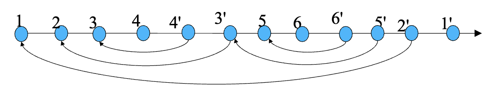
ARIES 支持 partial rollback
- 例如 deadlock recovery 中，只需要 rollback 到释放所需 locks 的位置，而不一定 abort 整个 transaction。
- 如上图所示，可以先 rollback 3 和 4，然后接着执行 5 和 6，最后完全回滚
Undo Pass¶
Undo pass 对 undo-list 中的 transactions 执行回滚：
- 对每个 transaction，把下一条需要 undo 的 LSN 设为 analysis pass 中找到的 LastLSN
- 每一步选择这些 LSN 中最大的一个
- 跳到对应 log record 并 undo
- 如果是 ordinary log record：
- 进行撤销操作，并追加一条 CLR 记录
- 把该事务下一条要 undo 的 LSN 设为该 log record 中的
PrevLSN
- 如果是 CLR：
- 把该事务下一条要 undo 的 LSN 设为该 CLR 中的
UndoNextLSN - 中间 log records 跳过，因为它们已经被 undo 过
- 把该事务下一条要 undo 的 LSN 设为该 CLR 中的
- 当事务回退到它的
begin记录时，系统会追加一条<T, end>日志，并将其从undo-list中删除。
Undo pass 结束后，所有 incomplete transactions 的影响都被撤销。
Example
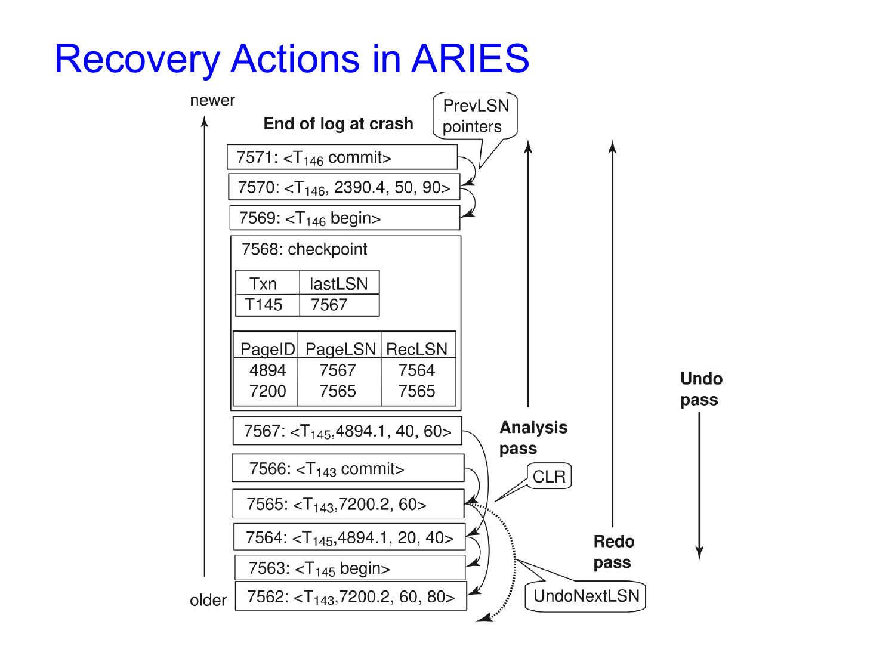
图中的含义：
- log records 通过 PrevLSN 串成 transaction log chain。
- CLR 通过 UndoNextLSN 指向下一条应该继续 undo 的记录。
- Analysis / Redo 向前扫描，Undo 向后扫描。
- 如果 rollback 过程中 crash，恢复时可以通过 CLR 跳过已经 undo 的区间。
14.10.4 Other ARIES Features¶
ARIES 还有一些重要特性：
- Recovery independence
- pages 可以独立恢复。
- 例如某些 disk pages 损坏时，可以从 backup 恢复这些 pages，同时其他 pages 仍可使用。
- Savepoints
- transaction 可以设置 savepoint，并 rollback 到某个 savepoint。
- 适合复杂事务。
- deadlock 时也可以只 rollback 到足以释放 locks 的位置。
- Fine-grained locking
- 支持 tuple-level locking on indices。
- 这通常需要 logical undo。
- Recovery optimizations
- dirty page table 可用于 redo 时 prefetch pages。
- 可以 out-of-order redo。
- 如果某个 page 正在 fetch，可以先处理其他 log records。
14.11 *Remote Backup Systems¶
Remote backup systems 通过 remote backup site 提供 high availability。
Failure Detection¶
Backup site 必须检测 primary site 是否失败
难点是区分：
- primary site 真的失败
- communication link 失败
常见方法： - primary 和 backup 之间维护多条 communication links
- 使用 heart-beat messages
Transfer of Control¶
当 backup site 接管时：
- backup site 先用自己的 database copy 和从 primary 收到的 log records 执行 recovery。
- committed transactions 被 redo。
- incomplete transactions 被 rollback。
- backup site 接管处理，成为新的 primary。
如果旧 primary 恢复后要重新接管：
- 旧 primary 必须从旧 backup 接收 redo logs。
- 在本地应用所有更新。
- 然后才能重新成为 primary。
Time to Recover and Hot-Spare¶
为了减少 takeover delay，backup site 可以周期性处理 redo log records。这相当于 backup 不断从之前的 database state 开始做 recovery，并定期 checkpoint，这样旧 log 可以删除。
Hot-Spare configuration 可以实现很快接管：
- backup 持续处理 primary 传来的 redo log records。
- updates 会不断在 backup 本地应用。
- 一旦检测到 primary failure，backup 只需要 rollback incomplete transactions，就能开始处理新 transactions。
Remote backup 的替代方案是 distributed database with replicated data。
比较：
- Remote backup 更快、更便宜。
- 但对 failure 的容忍度不如完整的 replicated distributed database。
Durability Levels¶
为了确保 update durability，可以延迟 transaction commit，直到 update 也被 logged at backup，但这会增加 commit latency。
| Strategy | Commit condition | Advantage | Problem |
|---|---|---|---|
| One-safe | commit log record 写到 primary 就 commit | 延迟低 | update 可能还没到 backup，backup 接管后丢失 |
| Two-very-safe | commit log record 写到 primary 和 backup 后才 commit | durability 强 | primary 或 backup 任一失败时 transaction 不能 commit，可用性低 |
| Two-safe | primary 和 backup 都 active 时按 two-very-safe；只有 primary active 时按 one-safe | 比 two-very-safe 可用性好，也避免 one-safe 的 lost transaction 问题 | 语义更复杂 |
Abstract
Remote backup 的核心 trade-off 是 commit latency、durability 和 availability 之间的取舍。